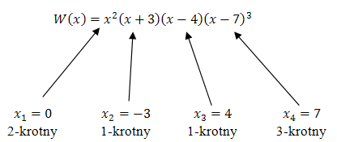
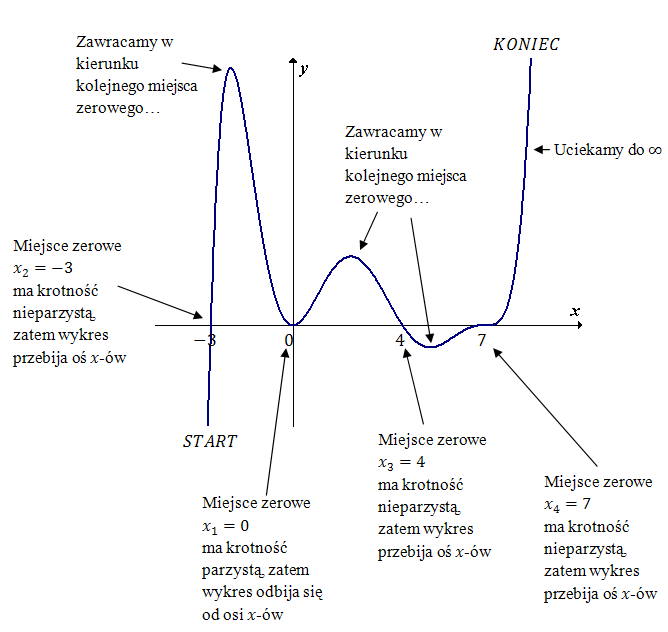

Żeby narysować wykres wielomianu, wykonujemy kolejno
następujące kroki:
- Przekształcamy wzór wielomianu do postaci iloczynowej.
- Wyznaczamy miejsca zerowe (pierwiastki) wielomianu.
- Określamy krotności wyliczonych pierwiastków oraz stopień wielomianu.
- Rysujemy wykres wielomianu od lewej strony do prawej według schematu:
- Rysujemy układ współrzędnych.
- Na osi x-ów zaznaczamy wyliczone miejsca zerowe.
- Określamy miejsce z którego zaczniemy rysować nasz wykres:
- Jeżeli stopień wielomianu
jest parzysty oraz współczynnik liczbowy przy x w najwyższej potędze jest
dodatni, to zaczynamy rysowanie z lewego górnego rogu układu współrzędnych.
- Jeżeli stopień wielomianu
jest nieparzysty oraz współczynnik liczbowy przy x w najwyższej potędze jest
dodatni, to zaczynamy rysowanie z lewego dolnego rogu układu współrzędnych.
- Jeżeli stopień wielomianu
jest parzysty oraz współczynnik liczbowy przy x w najwyższej potędze jest
ujemny, to zaczynamy rysowanie z lewego dolnego rogu układu współrzędnych.
- Jeżeli stopień wielomianu
jest nieparzysty oraz współczynnik liczbowy przy x w najwyższej potędze jest
ujemny, to zaczynamy rysowanie z lewego górnego rogu układu współrzędnych.
- Rysujemy linię wykresu do najbliższego miejsca zerowego.
Jeżeli
dane miejsce zerowe ma krotność nieparzystą, to w tym miejscu wykres przebija oś
x-ów.
Jeżeli miejsce zerowe ma krotność parzystą, to w tym miejscu wykres odbija
się od osi x-ów.
- Gdy już przejdziemy przez wszystkie miejsca zerowe, to kończymy rysowanie
wykresu, pozwalając mu uciec do nieskończoności, po tej stronie osi x-ów, po której się
znajduje.
Pomimo tego, że powyższy opis jest dość długi, to wykresy wielomianów rysuje się bardzo szybko i
przyjemnie.
Całą powyższą metodę przećwiczymy teraz na konkretnym przykładzie.
Naszkicuj wykres wielomianu \(W(x) = x^2(x + 3)(x - 4)(x - 7)^3\).
Nasz wielomian dany jest już w postaci iloczynowej. Wyznaczamy zatem jego miejsca
zerowe: \[\begin{split} x^2(x + 3)(x - 4)(x - 7)^3 &= 0\\[6pt] x = 0 \quad &\lor \quad x + 3 = 0
\quad &\lor \quad x - 4 = 0 \quad &\lor \quad x - 7 = 0\\[6pt] x = 0 \quad &\lor \quad x = -3
\quad &\lor \quad x = 4 \quad &\lor \quad x = 7\\[6pt] \end{split}\] Teraz określamy krotności
tych pierwiastków:  Nasz wielomian jest \(7\) stopnia (bo suma
wykładników \(2 + 1 + 1 + 3 = 7\)). Ponadto współczynnik liczbowy przy \(x^7\) jest dodatni
(jest równy dokładnie \(1\)). Co prawda, w podanej postaci iloczynowej wielomianu nie widać
bezpośrednio wyrażenia \(x^7\), ale łatwo zauważyć, że po wymnożeniu wszystkich nawiasów
otrzymamy \(x^7\) ze współczynnikiem liczbowym równym \(1\). Stopień wielomianu jest nieparzysty
oraz współczynnik liczbowy przy \(x\) w najwyższej potędze jest dodatni, więc zaczynamy
rysowanie wykresu od lewego dolnego rogu układu współrzędnych:
 Uwaga
Wielkość
"górek i dołków", czyli tych miejsc gdzie wykres zawraca, nie ma znaczenia. Można wszystkie
rysować tej samej wielkości. Na powyższym wykresie górka między pierwszym, a drugim miejscem
zerowym jest największa, bo tak w rzeczywistości wygląda ten wykres. My jednak nie musimy tego
wiedzieć i moglibyśmy równie dobrze narysować ją dużo mniejszą.